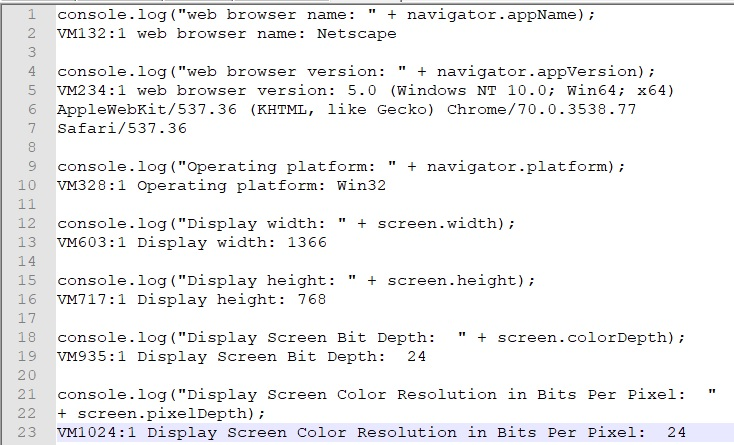

Web Security
Have you ever wondered how much information a website can get from a user's computer? Believe it or not, web applications can tell things about your computer. Here are a few things that can be identified:
- The onLine property can determine whether a browser has a network connection.
- The platform property can determine which operating system is in use on the computer.
- The appName and appVerison properties can determine the name and version of the web browser displaying the page.
- The availHeight and availWidth properties can deermine the height and width of the display excluding OS features like the Windows taskbar.
Here's an example of the console messages:
